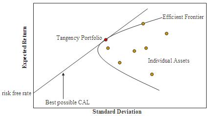
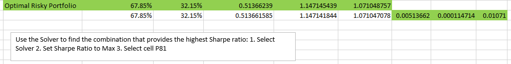
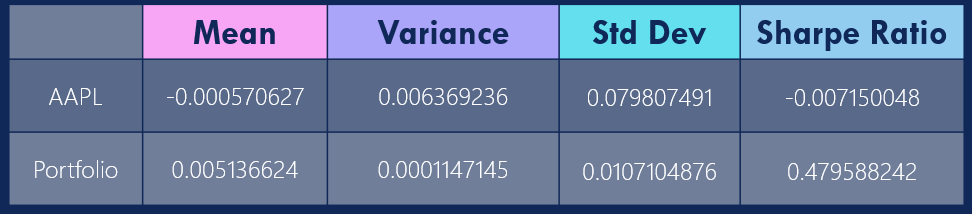

Financial Modeling:
Optimal Risky Portfolio
In this Financial modeling project, I planned for an investment portfolio of $5 million in two mutual funds - Vanguard Total Bond Market Index Fund (VBTLX) and Vanguard 500 Index (VFIAX) based on the optimal risky portfolio model, and compared the portfolio performance with the single security AAPL.
Background
The Optimal Risky Portfolio is the portfolio on the efficient frontier that offers the highest return per unit of risk measured by the Sharpe ratio. The efficient frontier is the set of portfolios maximizing expected return for a given level of risk, as measured by the standard deviation of return.
The Sharpe ratio compares the return of an investment with its risk. It's a mathematical expression of the insight that excess returns over a period of time may signify more volatility and risk, rather than investing skill. The Sharpe ratio's numerator is the difference of expected mean return and the risk-free rate of return. Its denominator is the standard deviation of returns over the same period of time. Simply put, Sharpe Ratio = (Mean Return Rate - Risk Free Rate)/Standard Deviation of Return Rate. The risk free rate in this project is assumed to be 0.
Data Source
Historical monthly price data for AAPL from August 2015 to July 2016 and historical monthly returns data for VBTLX and VFIAX from January 2012 to July 2016. Data can be retrieved at MorningStar's website: https://www.morningstar.com
Task
Utilizing the knowledge of efficient frontier and portfolio optimization in managing portfolios:
1. Portfolio Allocation
 There are two approaches to calculate the allocation weights. First, calculate the approximate weights: use a 5% increment in weight (e.g., 0%, 5%, ..., 95%, 100%) in each stock, calculate the corresponding portfolio mean return and standard deviation, based on which plot the efficient frontier using the portfolio characteristics for each weight. The standard deviation and mean return can be found on the Efficient Frontier chart, and the Sharpe ratio can thus be calculated.
There are two approaches to calculate the allocation weights. First, calculate the approximate weights: use a 5% increment in weight (e.g., 0%, 5%, ..., 95%, 100%) in each stock, calculate the corresponding portfolio mean return and standard deviation, based on which plot the efficient frontier using the portfolio characteristics for each weight. The standard deviation and mean return can be found on the Efficient Frontier chart, and the Sharpe ratio can thus be calculated.
Another more accurate approach is using the Solver function in Excel: set the Sharpe Ratio cell to "Max", and select one of the funds' weight as the variance cell. The weights calculated for VBTLX and VFIAX are 67.85% and 32.15%, and Sharpe ratio is 0.4796. Given $5 million in toal, I would invest $3,392,291.69 into VBTLX and $1,607,708.31 into VFIAX as of the end of December 2015.
2. Portfolio Monthly Return
Given the monthly return rate for VBTLX and VFIAX, the monthly portfolio return rate can be calculated by summing up the multiplication of the weight and rate of each fund, based on which the return value and investment value can thus be calculated.

3. Portfolio VS Single Security
Using the same approach, the basic measures of the single security AAPL can be calculated as follows:

The monthly performance of the AAPL is as follows.

Comparison:
Although the single security brings higher returns in a single month, e.g., Feb 2016 and Jul 2016. Portfolio yielded a higher Sharpe Ratio and Mean Return, and lower variance and standard deviation.
See the link for my Excel worksheet
Summary
A sing security may yield higher return in short term, but the risk is that it may bring along greater loss. On the other hand, mixed assets portfolio may have more consistent return.
It is important to have portfolio diversification: invest in multiple securities or funds, and assets should be allocated based on the optimal risky portfolio that offers highest expected return on lower risk and minimum variance.